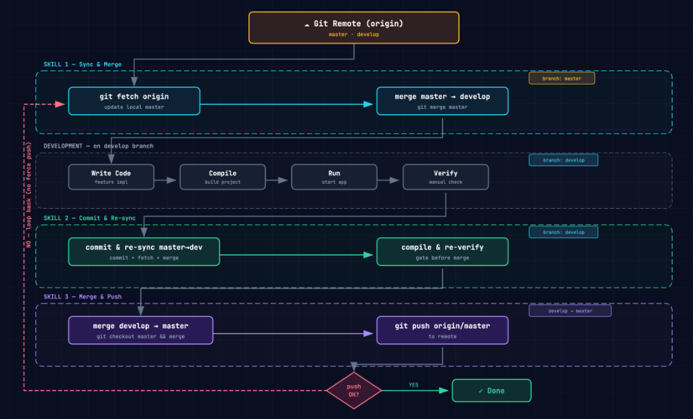

CLI AgentTERMINAL FIRST
把自然语言直接接入终端、代码库和 Git，是自动化与复杂任务的主力入口。
Claude CodeCodex CLIGemini CLIAider
适合：批处理、脚本、代码审查、Git 工作流与无图形界面环境。
从认知建立到工程化协作，按 8 大章节逐步深入实战。
建立认知框架：从“逐行写代码”到“表达意图与审查”
精准使用自然语言定义业务目标、边界条件与约束逻辑，取代繁琐的代码细节手写。
AI 模型的表现上限取决于给定的 Context（项目结构、规则文件、特定 API 示例）。
AI 负责初稿生成，人类负责单元测试、代码 Diff 逐行 Review 及架构合规校验。
这是软件工程从“手工制造”迈向“自动化工业组装”的里程碑
理解技术演进脉络：从代码补全到 MCP、Skills 与多 Agent 的工程化协作
2023–2026 权威调查快照：每张卡代表不同的调查问题与样本口径
同一公开基准横评：分数为 Artificial Analysis Intelligence Index v4.1（越高越好），展示模型在标注的推理档位下的结果。
零基础快速上手：打造你的 AI-Native 开发装备
运行于终端的 Agent：文件读写、Git 操作、命令执行与自动化闭环。
原生 AI 编辑器：代码库索引、规则文件、多文件并行编辑与 Agent 工作区。
嵌入现有 IDE：行内补全、Chat、局部重构及第三方 Agent 接入。
独立桌面入口：多项目会话、任务队列、MCP 连接与可视化操作。
先选工作界面，再选模型与权限边界：四种形态可以并存，不必把一款工具当成全部工作流。
把自然语言直接接入终端、代码库和 Git，是自动化与复杂任务的主力入口。
以项目工作区为核心，提供代码索引、规则文件、多文件编辑和可追踪的 Diff。
保留团队既有 IDE 与快捷键习惯，在编码现场补齐 Chat、补全和局部 Agent 能力。
以独立会话与任务面板承接编码 Agent，并适合图文、文件与 MCP 的可视化操作。
任选与你当前工作界面最接近的一种开始。关键不是安装得多，而是让工具真正读取项目、执行任务并产出可审查的变更。
claude（复用 ~/.claude/settings.json 中的 DeepSeek / GLM 配置，无需 Anthropic 账号登录）。Claude Code 本身不生产模型：它把你的代码与 Prompt 转发给模型服务商。区别只在于“数据最终停留在谁的服务器上”。
任选其一即可开工；两者共用同一份 ~/.claude/settings.json，先选工作界面，再配置模型接口。
npm i -g @anthropic-ai/claude-code~/.claude/settings.json 中配置共享环境变量（见下方配置块）。claude，用 /model 切换 DeepSeek / GLM 模型。ANTHROPIC_BASE_URL 改为 api.deepseek.com/anthropic，模型用 deepseek-chat。~/.claude/settings.json（已含 DeepSeek / GLM 的 ANTHROPIC_BASE_URL 与 ANTHROPIC_AUTH_TOKEN），无需再登录 Anthropic 账号。Disable Login Prompt 改走第三方 API 凭据。~/.claude/settings.json（CLI 与 VS Code 插件通用）替换 YOUR_API_KEY 为你上一步获取的 API Key{
"env": {
"ANTHROPIC_AUTH_TOKEN": "YOUR_API_KEY",
"ANTHROPIC_BASE_URL": "https://open.bigmodel.cn/api/anthropic",
"ANTHROPIC_DEFAULT_SONNET_MODEL": "glm-5.2[1m]",
"ANTHROPIC_DEFAULT_OPUS_MODEL": "glm-5.2[1m]",
"CLAUDE_CODE_DISABLE_NONESSENTIAL_TRAFFIC": 1
}
}从 Prompt 工程到 Loop 工程：掌握顶级开发者心法
提示词工程： 精雕细琢单条提问的句式、语气与少样本示例。
上下文工程： 精准投喂项目文件、AST 依赖节点与接口约定。
驾驭工程： 建立 Rules、权限防线、类型约束与自动测试栅栏。
循环工程： AI 自主“编写-编译-测试-修正”的闭环自动化。
帮我写一个用户登录 API 接口。【角色】Node.js 资深安全架构师
【背景】开发企业级 API 网关登录模块
【任务】实现 loginController 逻辑
【约束】必须用 argon2 密码哈希，参数校验用 Zod，禁用内联 try-catch
【格式】仅输出 Controller TS 代码片段# 代码 Review 类 Prompt 模板：
请从以下维度 review 代码：
□ 性能瓶颈与慢查询 □ OWASP Top10 安全漏洞
□ 边界条件与空指针 □ 是否符合 SOLID 原则
严重程度请用 🔴(高风险) 🟡(中风险) 🟢(建议) 标注。
# Debug 类 Prompt 模板：
报错信息：[完整 StackTrace] | 已排查：[尝试路径]
请先分析根本原因，再给出最少侵入的修复方案。把写 Prompt 当作给一位聪明但对项目一无所知的新同事写工作说明：信息越结构化、越有边界，AI 输出就越稳定可用。
@src/user.ts#L15-L40 限定特定函数片段，比全量载入文件提升 5 倍聚焦度。
.claudeignore)
node_modules/、dist/、.env* 及庞大日志，防止无谓全库扫描。
@codebase 全量向量检索
.claude/rules/
├── 00-security.md # [最高权重] 安全校验、注入拦截与敏感信息防护
├── 01-code-style.md # [全局] TypeScript/Rust 统一代码风格与命名规约
├── 10-api-design.md # [模块] RESTful / gRPC 标准响应结构与状态码定义
├── 11-frontend-ui.md # [按路径匹配] React / Tailwind 组件编写与可访问性
└── 20-testing-rules.md # [质量门槛] Jest / Playwright 自动化单测覆盖率阈值CLAUDE.md / AGENTS.md 最佳实践指南CLAUDE.md 与 AGENTS.md 的关系
两者因提出时间与 Agent 生态发展阶段不同而存在命名差异。在核心功能、解析权重与写法上完全等效，可相互引用、相互继承，或配置为符号链接。
# 项目核心指引 & 规范手册 (CLAUDE.md / AGENTS.md)
## 常用命令 (Commands)
- 构建项目: `npm run build`
- 运行单测: `npm run test:unit`
- 代码检查: `npm run lint`
## 代码风格 (Code Style)
- 使用 TypeScript 严格模式，禁止显式使用 `any`
- 组件命名使用 PascalCase，工具函数使用 camelCase
- 样式优先使用 Tailwind CSS 响应式类名
## 架构约束 (Architecture Rules)
- 业务逻辑必须封装于 `src/services/`
- API 返回值遵循 `{ code: number, data: T, msg: string }`
## 踩坑避坑红线 (DO NOTs)
- 严禁修改 `prisma/schema.prisma` 基础主键定义
- 提交代码前必须确保单元测试 100% 通过settings.json 权限控制| Slash 命令 | 核心功能与适用场景描述 |
|---|---|
/init |
项目初始化： 扫描工程结构，自动创建 .claude/ 基础配置。 |
/plan |
方案规划： 开启复杂任务模式，先输出设计步骤再动手编码。 |
/compact |
上下文压缩： 压缩长对话历史，释放 60%+ Token 空间。 |
/review |
代码审查： 对选定代码或 Diff 进行规范校验与安全重构。 |
/context |
容量诊断： 实时查看当前会话 Token 占用与文件耗费分布。 |
/clear |
会话重置： 彻底清除当前历史记忆，恢复至干净初始状态。 |
/model |
模型切换： 动态切换底层模型（如 Haiku / Sonnet / GLM）。 |
/ 即可快速触发命令自动补全面板。
settings.json 权限安全体系{
"permissions": {
"allow": [
"read:*",
"exec:npm test",
"exec:git status"
],
"ask": [
"write:*",
"exec:git push*"
],
"deny": [
"exec:rm -rf *",
"read:.env*"
]
}
}~/.claude/settings.json。
/ Slash 系统指令
/plan 方案设计、/compact 压缩记忆与 /review 审计。
@ At 上下文精确定位
@src/user.ts#L10-L30），避开全库扫描。
! Bang 强制终端命令
!npm test）并抓取终端日志。
& Async 后台进程启动
&npm run dev），不阻塞当前交互。
输入路径或 / 时快速按 Tab 智能匹配补全目标。
当发现 Agent 思考死循环或方向偏离时迅速中断思维。
方便换行分段，编写带角色、上下文与约束的黄金提示词。
强制终止终端耗时死锁任务，释放本地系统 CPU 资源。
# 1. 使用 /plan 开启复杂任务规划模式
> /plan 依据 @src/types/auth.ts 重构登录 API
# 2. 强制要求 Agent 执行单测捕获 Traceback
> !npm test -- --grep "auth"
# 3. 后台守护运行 Dev 开发服务器
> &npm run dev
# 4. 实时诊断上下文占用与费用
> /context
# 5. 完成独立 Feature 后重置干净状态
> /clearsettings.json 配置 CLAUDE_CODE_AUTO_COMPACT_WINDOW。CLAUDE_CODE_DISABLE_NONESSENTIAL_TRAFFIC。node_modules、dist 及日志文件，防止全量扫描。/compact 压缩历史记忆。/clear 恢复干净初始状态。@codebase，防止一次性将整仓代码全量投喂。@ 修改涉及的具体文件或符号（如 @user.ts#L20-L50）。/context 查看占用和费用的习惯。settings.json 设置 API_TIMEOUT_MS。
事故： AI 自信地 import { cryptoTool } from 'express-secure-utils'，该包系幻觉生成，黑客投毒后导致供应链安全隐患。
解法： 开启 Lint 检验并强制运行 npm install 检查源合法性。
事故： 带着 50 轮对话错误日志继续提问，AI 不断拆东墙补西墙。
解法： 及时 /clear 重置会话，重新梳理最精简上下文发问。
事故： 要求“把整个项目从 JS 改为 TS”，导致修改了 80 个文件，无法通过 Review。
解法： 使用 /plan 拆解为 10 个独立子 Task 分批推进。
成员大多为非技术背景（产品组），通过自建 3 个自动化 Skill 封装底层复杂 Git 指令，实现全员高可靠协作

| 序号 | 阶段 | Skill 名称 | 核心自动化用途 | 后续操作与异常处理 |
|---|---|---|---|---|
| 1 | 开发前 | git-sync-master-to-develop |
自动拉取更新 master 分支 → 合并到本地 develop |
自检处理冲突后继续开发 |
| 2 | 开发后 | git-commit-and-sync-master |
提交 develop → 再次拉取 master → 反向合并到 develop |
重新编译验证，有冲突自检处理 |
| 3 | 发布 | git-merge-to-master-and-push |
自动合并 develop 到 master → 推送至 origin/master |
无异常继续从 Step 1 循环；有异常自检处理后从 Step 1 重跑 |
12 位跨背景成员（含产品组）、4 种 AI 工具、多大模型混用下，基于开源项目 UI Style Pilot (USP) 实现组件代码和视觉规范统一
成员分别使用 Cursor、Claude Code、Trae、ChatGPT 等不同编辑器/客户端。
后台混用 Claude、GPT、DeepSeek、GLM 等不同厂商模型。
非技术产品人员与开发者的自然语言描述习惯差异巨大，极易导致样式脱节。
CLAUDE.md / AGENTS.md / .cursorrules。src/components/index.ts，AI 生成前必须优先检索复用既有 UI 组件。page-building、design-review、component-reuse 等团队技能包。
团队统一制定 AGENTS.md / CLAUDE.md 作为 Agent 长期生效基线，约束 12 异构团队构建 600+ 页面 100% 规范一致
index.ts 导出 > Vue 源码 > Design Tokens > 业务页面 > 文档。DsPage/DsDataTable，表单使用 DsFormGrid，状态标签使用 DsStatusTag。.ant-* 类名。# AGENTS.md 项目入口基线
- 任务与 Skill 路由映射：新增 Vue 页面必须调用 `frontend-page-builder` Skill
- 绝不重复造轮子：公共组件必须从 `@/components` 导入并使用 stable 状态组件 (`DsPage`, `DsFormGrid`)
- 业务守恒：重构必须完整保留页面按钮、字段条件、页签抽屉、接口契约与权限校验基于长江电力新一代生产经营管理系统实战（12 人团队，相关技术开发人员只4人，全栈仅1人，交付 600+ 页面与复杂业务流），传统模式与 VibeCoding 体系的实际量化对比
| 研发阶段与任务模块 | 传统开发估算 (600页) | VibeCoding 实战耗时 | 提效幅度与成果 |
|---|---|---|---|
| 基础框架与 600+ 页面 Page Shell 铺设 | 20 人天 (脚手架/路由/菜单) | 1.5 人天 (生成 前后端项目架构 骨架) |
13.3x 提效 |
| 后台RBAC管理体系，视觉规范标准落地 | 15 人天 (基于甲方规范要求和开源项目) | 2 人天 （DS*组件封装） |
7.5x 提效 |
| 页面和业务流程开发 | 590 人天 (手动搭建 AntD Vue) | 170 人天 (借助不同AI Agent) | 3.5x 提效 |
| 样式迁移、UI 规范审查与 BUG 调试 | 25 人天 (人工逐页对比 CSS) | 2.5 人天 (设计审查 Skill) | 10x 提效 |
总体研发周期压缩 73%，实现 3.7 倍级生产力跃迁。
在 AGENTS.md 约束下，1,156 个业务视图中有 1,021 个深度绑定 Ds* 规范库 (调用超 1.9 万次)。
非技术产品人员配合 3 大 Git Skill 独立写码并成功上线，打破技术壁垒。
摒弃传统“先用 Axure 绘制低效原型、再由前端二次重复敲代码”的繁琐流程。在 VibeCoding 范式下，由需求直接生成高保真、可交互的代码级真实页面，变相实现了巨大的人力与时间资源再节省！
范式变革：从工具演化到 AI-Native 开发范式重构
截图/Figma 直接转生产代码，压缩设计到开发边界。
需求文档输入 Agent 自动构建模块原型。
监控日志直连 AI 自动提交 PR 修复补丁。
| 评估维度 | 巨大的机遇 (Opportunities) | 严峻的挑战 (Challenges) |
|---|---|---|
| 研发效率 | 交付速度获得 3-10 倍量级提升 | 质量把控门槛与 Code Review 压力剧增 |
| 工程师角色 | 全栈门槛大幅降低，一人即为一个团队（OPT） | 传统编程语言精通者的专业深度价值重估 |
| 架构控制 | 快速验证 MVP 产品原型与市场契合度 | AI 容易生成隐性技术债务 (Technical Debt) |
| 团队组织 | 小团队能做大产品，沟通摩擦大幅减少 | 团队代码规范与安全审计体系亟待新建 |
部署顶级 AI 推理集群（如 H100 / GB200）硬件采购与电力成本极高。高并发模式下，大规模 Tokens 消耗的边际成本依然是企业全面普及的显著经济门槛。
目前真正具备深度逻辑推理与代码生成能力的 SOTA 级模型（如 Claude / GPT）依赖少数头部巨头闭源提供，存在网络延时、访问限制与数据合规隐虑。
正如电话、大中型计算机与 PC 刚诞生时一样： 早期技术必然伴随着昂贵与少数人特权。随着芯片算力效率提升、端侧/开源模型（如 DeepSeek 等）算法突破以及推理成本指数级下降，AI 必将突破这两大壁垒，如电网与 PC 般无处不在，真正开启全员 AI-Native 的全民普惠时代！
大模型演进迅猛：从前年的以年为单位更新，到去年的半年大版本更新，未来更新周期可能压缩至3 个月甚至更短。
模型能力提升导致研发步骤被动坍缩：原本需要 7 步完成的工作，模型升级后只需 5 步，有 2 步被大模型直接接管内化。
GitHub 上几乎每天都在诞生全新的万星 Skill 与 Plugin，工具链的高速阵痛重构导致难以形成固定的“标准 SOP 流程”。
在技术海啸面前，不要试图固化教条；保持拥抱变化的心态，才是 VibeCoding 时代的终极生存法则。
合规使用：防范数据泄露，建立清醒的安全意识与操作规范
API_KEY / AWS_SECRETDB_PASSWORD / 数据库串JWT_SECRET / 私钥 .pem把 AI 当作一位“能力极强但不了解你公司保密规定的外包同事” —— 你绝不会把数据库密码直接告诉他，但可以让他帮你写通用逻辑。把握好这个边界感，就是 AI 安全使用的本质。
// ❌ 危险：直接粘贴真实配置
const config = { dbHost: "192.168.1.100", dbPassword: "Prod@2026!", apiKey: "sk-abc123" }
// ✅ 安全：先脱敏为占位符再提问
const config = { dbHost: "DB_HOST", dbPassword: "DB_PASSWORD", apiKey: "API_KEY" }.env .env.local *.key *.pem secrets/ private/
请对以下代码进行安全审查，重点检查：SQL注入、XSS、越权、敏感泄露。
用 🔴高危 🟡中危 🟢低危 标注每个问题并给出修复方案：[粘贴代码]AI 生成代码可能引入过时、废弃或幻觉伪造的恶意 npm/pip 包。每次新增依赖后必须跑命令扫描并核查 Star/下载量：
npm audit (Node.js)
pip-audit (Python)
trivy fs . (容器/文件扫描)
| AI 工具名称 | 用于模型训练 | 企业隔离认证 | 数据存储协议 | 推荐应用场景 |
|---|---|---|---|---|
| Cursor Business | 可一键关闭 (Opt-out) | 支持 SOC2 | 不持久化 (ZDR) | 企业商业开发 |
| GitHub Copilot Ent | 可一键关闭 (Opt-out) | 企业独立实例 | 加密传输不存盘 | 企业商业开发 |
| Cursor 免费/个人版 | 默认可能开启 | 无独立隔离 | 有云端缓存 | 仅限个人学习/开源 |
| Ollama 本地模型 | 完全无传输 | 物理级断网隔离 | 100% 纯本地 | 绝密/高敏感商业项目 |
Let's Go：拥抱 AI-Native 时代，开启高效工作流
从“代码撰写者”转变为“系统设计者”。能否把模糊业务需求清晰拆解为可被 AI 执行的具体规则与模块接口，决定了交付上限。
AI 负责生成海量代码，人类工程师负责最关键的鉴别、安全审查与边界断言。识别潜在逻辑漏洞与幻觉的能力成为核心壁垒。
懂得如何精细化管理 Context，建立标准化团队规则（如 USP / CLAUDE.md），将领域知识与风格沉淀为可复用的数字资产。
拥抱 VibeCoding，开启智能开发新时代